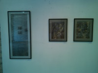
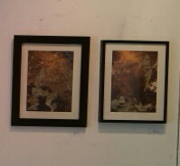
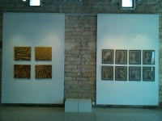
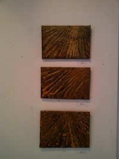
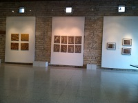

|
|





Ομιλία της Δρος Νάτιας Αναξαγόρου
Προϊστάμενης Πολιτιστικών Υπηρεσιών του Δήμου Λεμεσού
στα εγκαίνια της έκθεσης ζωγραφικής του Χάρη Πασπαλλή
την Παρασκευή 22 Μαΐου 2015
στο Ίδρυμα Τεχνών Πήγασος στις 8.00 μ.μ.
Για τον Χάρη Πασπαλλή η τέχνη όπως και τα ταξίδια αποτελούν την υψίστη μορφή επικοινωνίας και παράλληλα ένα παράθυρο ανοικτό όχι μόνον προς τους άλλους μα κυρίως προς τον ίδιο τον εαυτό, συνιστώντας την πιο ουσιαστική ενδοσκόπηση στα βάθη της ύπαρξης.
Η παρούσα έκθεση του ζωγράφου συσπειρώνει στοιχεία από προηγούμενες φάσεις της δουλειάς του, τα οποία επαναδιατυπώνει εδώ μέσα από μια καινούργια προοπτική. Η γη, που μεταφέρεται σε επιτοίχιες κατασκευές και συνθέσεις, άλλοτε αυτούσια με το χώμα, τα στάχυα και τ’ άλλα συστατικά της και άλλοτε σε εκτύπωση, επιζωγραφίζεται με στίχους από ποιήματα του Κωνσταντίνου Καβάφη, που λειτουργούν ως στοχασμοί αναθεώρησης και ανασύνταξης επάνω σε ρευστά και μεταβαλλόμενα τοπία όπου καταρρίπτονται τα τείχη και διαφαίνεται μέσα από ένα καινούργιο πρίσμα η πόλη ως ένας άλλος ερχομός ή μια επάνοδος σε οικείους ή ανοίκειους κόσμους. Η γη, άλλωστε, σ’ όλες της τις εκφάνσεις, καθώς αποδίδεται με την όψη οργωμένων πεδιάδων, θερισμένων κάμπων ή νοτισμένων αγρών αποτελεί για τον καλλιτέχνη την υπέρτατη πηγή έμπνευσης, την απόλυτη επανασύνδεση με το παρελθόν, με μνήμες και βιώματα των παιδικών χρόνων αλλά και το κανάλι ή το πέρασμα εκείνο εξοικείωσης με νέους ανθρώπους και πολιτισμούς.
Οι πλούσιες υφές που προκύπτουν από τη ζωοποιό συνεύρεση της γης με το νερό, καθώς αυτή μετουσιώνεται, εν είδει λάσπης και πηλού, σε έργα τέχνης άλλοτε προκαλούν και προσκαλούν το άμεσο άγγιγμα του θεατή κι άλλοτε παρεμβάλλονται στο φόντο ως φωτογραφική αποστασιοποίηση, που συλλαμβάνει μια κινηματογραφική σχεδόν, ακαθόριστη θέαση γήινων εκτάσεων από ψηλά, απελευθερώνοντας έτσι τη φαντασία να περιηγηθεί πέρα από φραγμούς και γεωγραφικά σύνορα.
Με μια πληθώρα μικτών υλικών, ζωγραφική και κολλάζ, ο Χάρης Πασπαλλής καταφέρνει να ενεργοποιήσει μέσα από τις ανάγλυφες επιφάνειές του τις αισθήσεις όχι μόνον της αφής αλλά της όσφρησης, προσδίδοντας στις δημιουργίες του τις μυρωδιές και τον παλμό της φύσης. Ενεργοποιεί όχι μόνο την όραση αλλά και την ενόραση, την εναλλακτική πρόσληψη των πραγμάτων, σε ένα σύμπαν όπου φόρμες, περιγράμματα και σχήματα επαναχαρτογραφούνται, μετατρέποντας το τοπικό σε διατοπικό, το ατομικό σε πανανθρώπινο, μέσα από τα αφιερώματα αυτά στην αλληλοδιαδοχή της ύλης, στην υπερβατική πρόσμειξή της με το επέκεινα, που βρίσκει την παραλληλία της στους οικουμενικούς ρυθμούς του καβαφικού λόγου, σε μοναδικές ψυχογραφίες ποιητικών τοπίων.
|